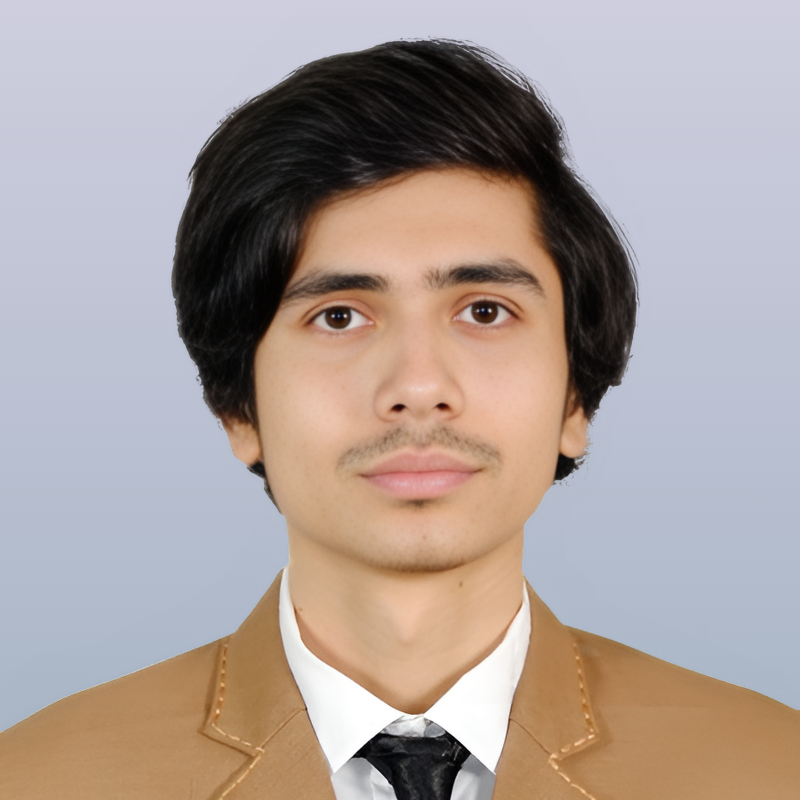

Pranto Roy
I am an Earth Science enthusiast with a Bachelor's degree in Oceanography and a deep interest in studying past environments, events, and climate using approaches such as proxies, stable isotope analysis, computer-based models, etc. I am also interested in studying ocean acoustics and marine mammal acoustics. Apart from academics, I have a deep passion for music and photography and have expertise in music production, songwriting, and video editing.
Research Interests
- Paleoceanography
- Paleoclimatology
- Paleontology
- Ocean acoustics
- Marine-mammal acoustics
Research Experience
Undergraduate Research Project | 2023
The research aimed to investigate the antimicrobial activities of Seaweed (Gracilaria sp.) and Sea anemone (Diadumene lineata), focusing on harnessing natural resources for developing alternative antimicrobial agents amid rising antibiotic resistance. The study's significance is rooted in addressing public health concerns over antibiotic-resistant pathogens by exploring seaweed and sea anemones as potential sources of novel antimicrobial compounds. The study’s conclusion underlines the significant antimicrobial potential of Diadumene lineata, particularly against gram-positive bacteria Staphylococcus aureus and gram-negative bacteria E. Coli and Klebsiella pneumoniae The outcomes suggest the need for comprehensive studies to understand the chemical compounds responsible for the antimicrobial activities, advocating for the utilization of these marine organisms in developing new pharmaceuticals or drug adjuvants to augment the efficacy of existing medications
Conference Papers & Poster Presentations
Authors: Pranto Roy, Md Shahadat Hossain, Faisal Sobhan, Moshiul Alam Mishu
Projects
Map Construction Using Satellite Data
Lab Course | 2023
- Collected satellite datasets from MODIS, Landsat &Sentinel-2
- Processed and prepared the dataset by refining, resampling and making subsets
- Analysed the data to classify Vegetation, Sea Surface Temperature (SST), Cholorophil Concentration, etc.
- Utilized satellite imagery and data frames to visualize a detailed maps
Sediment Analysis
Lab Course | 2022

- Measured total nitrogen content in sediments to assess nutrient levels using Kjeldahl Method
- Conducted hydrometer analysis to determine soil texture
- Applied the Walkley-Black method to determine organic carbon content in sediments
- Used a series of sieves to classify particle size distribution in sediments
- Used
Field Trips
Coxs Bazar Plastic Seaweed Fish Algal torch ETC
Field Work | 2023

- Used quadrant and transect sampling techniques to collect various types of plastic materials from the beach
- Analyzed the collected samples and found that polythene and plastic bottles were the most prominent types of waste
- Explored the Bakkhali River estuary, observing various types of aquaculture including: Seaweed farming, Oyster farming, Green mussel farming, Vetki and Khoral culture
- Collected water data using a mini CTD to measure key parameters like temperature, salinity, and conductivitys
Kuakata Field Trip
Field Work | 2022
- Explored facilities and observed ongoing research and operations at the Bangladesh Fish Research Institute(BFRI).
- Used a CTD instrument to collect and analyze data on temperature, salinity, and conductivity from various sites
- Employed DO meter, pH meter, and turbidity meter for in-situ analysis of water quality parameters
- Collected sediment samples using an Ekman grab sampler for texture and composition analysis
Sundarbans Mangrove Forest Field Trip
Field Work | 2020
- Collected sediment samples using a grab sampler for particle size and organic content analysis
- Collected plankton samples at Trikon Island to study biodiversity and primary productivity
- Collected temperature, salinity, and pH data from various locations for a comprehensive analysis of water quality
- Engaged with local fishermen at Dublar Char to understand traditional practices and conservation challenges
- Observed wild deer at Hiron Point, noting biodiversity within the Sundarbans ecosystem
Cox's Bazar & St. Martin's Island
Field Work | 2019

- Observed coral ecosystems around Saint Martin Island, focusing on biodiversity and conservation challenges
- Measured temperature, salinity, and pH using water multiparameter at various coastal sites
- Visited the Fish Landing Center to observe local fisheries operations
- Visited Radiant Fish World, the first sea aquarium in Bangladesh, to study marine aquatic biodiversity
Education
Bachelor of Science in Oceanography [2019 - 2024]
CGPA: 3.52 (Out of 4.00)
Department of Oceanography,
Shahjalal University of Science & Technology (SUST), Bangladesh
Higher Secondary School Certificate [2016 - 2018]
GPA: 5 (out of 5.00)
Notre Dame College, Dhaka
Secondary School Certificate [2014 - 2016]
GPA: 5 (out of 5.00)
Naogaon K.D Govt. High School, Naogaon, Rajshahi, Bangladesh
References
|
Faisal Sobhan [Supervisor] Lecturer Department of Oceanography, SUST Phone: +8801674232796 Email: f.sobhan-ocg@sust.edu |
Moshiul Alam Mishu[Supervisor] Assistant Professor Dept. of BMB, SUST Phone: +8801778855656 Email: moshiul-bmb@sust.edu |
|
Dr. Subrata Sarker Associate Professor & Head Dept. of Oceanography, SUST Phone: +8801710417753 Email: subratasrk-ocg@sust.edu |